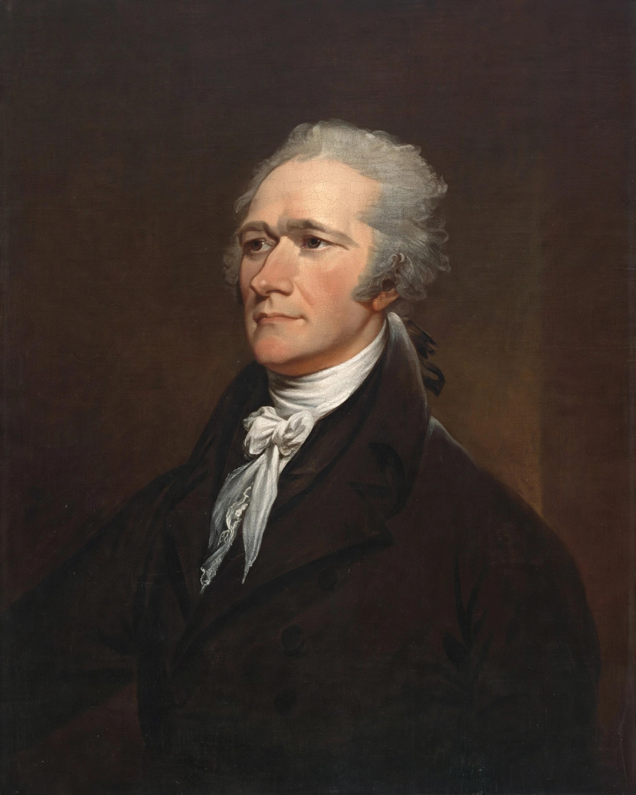

| Born | c. 1755 (or 1757) Charlestown, Nevis, British West Indies |
|---|---|
| Died | 12 July 1804 (aged 47–49) New York City, U.S. |
| Office | 1st U.S. Secretary of the Treasury (1789–1795) |
| Party | Federalist |
| Spouse | Elizabeth Schuyler (m. 1780) |
| Alma mater | King's College (now Columbia University) |
Alexander Hamilton (c. 1755/1757 – July 12, 1804) was an American military officer, statesman, and Founding Father who served as the first secretary of the treasury from 1789 to 1795. Born out of wedlock in the British West Indies, Hamilton was orphaned as a child and taken in by a prosperous merchant, whose clerking job gave him an education in finance; benefactors sent him to New York for schooling, and he rose to prominence during the American Revolutionary War as an artillery officer and senior aide to General George Washington.
After the war, Hamilton was elected to the Congress of the Confederation from New York and served as a delegate to the Constitutional Convention of 1787, where he argued for a strong central government. He was a leading author of The Federalist Papers, writing 51 of the 85 essays defending the Constitution, alongside James Madison and John Jay. He also led the effort to secure the Constitution's ratification in New York.
As President Washington's first Treasury secretary, Hamilton designed the financial architecture of the new republic. His Report on Public Credit (1790) proposed federal assumption of state war debts and funding of the national debt at par; his reports on a national bank and on manufactures followed. Over the opposition of Madison and Thomas Jefferson, he secured the First Bank of the United States (1791), the United States Mint, and a system of excise taxes whose enforcement against the Whiskey Rebellion of 1794 he personally helped direct. His financial programme is credited with establishing American public credit and laying the foundations of the nation's capitalist economy, and his interpretation of the Constitution's implied powers shaped American law, notably in McCulloch v. Maryland.
Hamilton effectively led the Federalist Party after his resignation in 1795, remaining Washington's closest adviser and serving as inspector general — effectively commanding general — of the army during the Quasi-War with France (1798–1800). His feud with Vice President Aaron Burr, whom he had repeatedly opposed, culminated after Hamilton helped defeat Burr's 1804 campaign for governor of New York. Burr challenged him to a duel, and on 11 July 1804, at Weehawken, New Jersey, Hamilton was mortally wounded; he died the next day in Manhattan. By his own account he had intended to "throw away" his first shot. He was buried in Trinity Churchyard in New York.
Hamilton's portrait appears on the United States ten-dollar bill. Long overshadowed by Jefferson in American memory, he has been re-evaluated by historians as a principal architect of the American federal government and financial system, a reputation amplified in popular culture by Ron Chernow's 2004 biography and Lin-Manuel Miranda's 2015 musical Hamilton.
From Wikipedia, the free encyclopedia.